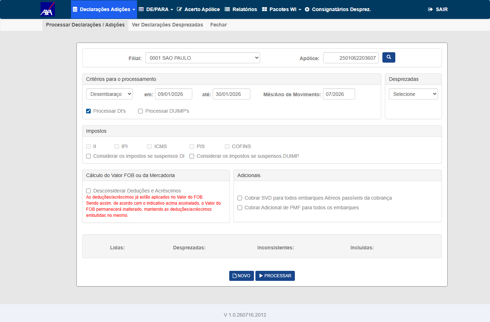
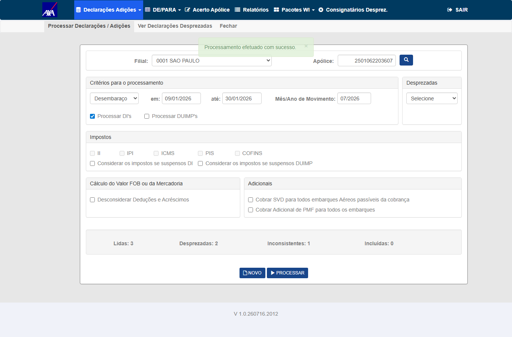
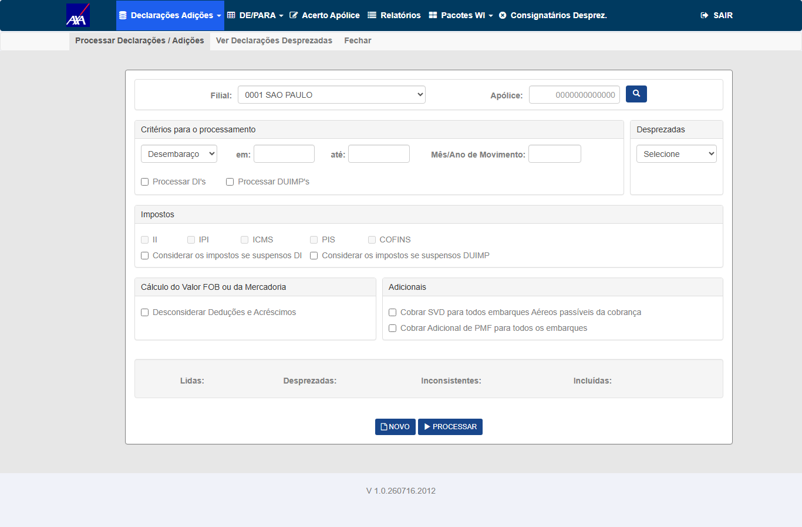
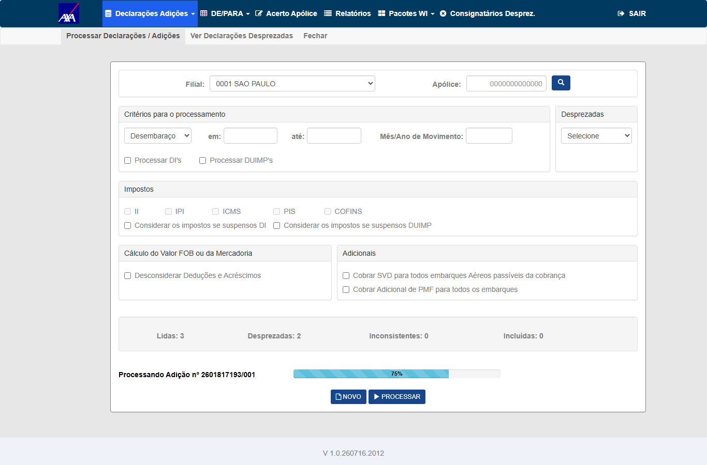

Casos de Teste — Reteste de Isolamento
Método: observador ocioso + concorrência real (2 usuários)
O detector mais direto do bug: o usuário B fica OCIOSO na tela de Processamento (contadores vazios)
enquanto o usuário A processa. Com o fix funcionando, a tela de B permanece vazia. Sem o fix (broadcast global),
a tela de B passa a exibir os contadores e o progresso de A.
CA01 (isolamento) + CA02 (estabilidade)
A = FRED (processa) · B = QA (ocioso, observando)
- Logar FRED (sessão A) e QA (sessão B) em navegadores/contextos distintos; ambos abrir WI/Siscomex → Declarações Adições → Processamento.
- [B] Deixar a tela de Processamento aberta e vazia (contadores em branco), sem interagir.
- [A] Filial 0001, Apólice 2501062203607, Critério Desembaraço (Jan/2026), Mês/Ano 07/2026, marcar Processar DI's, clicar Processar → Sim.
- Enquanto A processa, observar continuamente a tela de B (texto dos contadores e barra de progresso).
A exibe Lidas:3 / Desprezadas:2 / Inconsistentes:1 / Incluídas:0. A tela de B permanece vazia durante todo o processamento de A.
✗ Obtido: a tela do usuário B (QA), com o formulário vazio, passou a exibir
"Lidas: 3 · Desprezadas: 2" e a barra "Processando Adição nº 2601817193/001 — 75%" —
espelhando o processamento de A em tempo real. Sequência capturada em B: t+1,8s → "Lidas:0…" + 25%; t+1,9s → "Lidas:3 Desprezadas:2…" + 75%.
Reproduzido 2×. CA01 e CA02 não atendidos.
Evidências — 17/07/2026 · HML AXA · FRED + QA
REPROVADO

EV1 — Sessão A: formulário preenchido (Apólice 2501062203607, Processar DI's)

EV2 — Sessão A: "Processamento efetuado com sucesso" · Lidas:3 Desp:2 Incons:1 Incl:0

EV3 — Sessão B (ocioso) ANTES: contadores vazios, formulário em branco

✗ EV4 — VAZAMENTO: Sessão B (QA), formulário VAZIO, exibindo "Lidas: 3 · Desprezadas: 2" + barra "Processando Adição nº 2601817193/001 — 75%" (dados de A)
CA04 (independente do tipo de declaração)
Processar DI's e DUIMP's marcados
Com qualquer combinação de checkboxes, a tela de B (ocioso) permanece vazia.
✗ Obtido: mesmo vazamento com DI's + DUIMP's marcados — B recebeu os contadores/progresso de A.
O mecanismo de isolamento (
joinGroup) está ausente do build, logo nenhum tipo de declaração está isolado.
(Observação: o caminho DUIMP-only não pôde ser exercido com massa não-zero — a apólice usada não possui DUIMPs —,
mas a ausência do isolamento afeta todos os tipos igualmente.) CA04 não atendido.Evidências — 17/07/2026 · HML AXA
REPROVADO
EV5 — Sessão A: reprodução do processamento (Lidas:3 Desp:2 Incons:1)
EV4 — Sessão B (ocioso) exibindo dados de A (vale para todas as combinações de tipo)
CA03 (consistência durante o processamento)
A com resultado concluído (3/2/1/0); B inicia novo processamento DI
A tela de A permanece intacta (3/2/1/0), sem barras/overlays originados de B.
✗ Obtido: ao A processar, a tela do usuário B chegou a exibir o overlay de carregamento
originado do processamento de A (vazamento bidirecional de eventos de progresso), a ponto de interceptar a interação em B.
Como o mecanismo de isolamento (
joinGroup/Clients.Group) está ausente do build, a consistência por
sessão não é garantida em nenhum sentido. CA03 não atendido.Evidências — 17/07/2026 · HML AXA
REPROVADO
EV9 — Sessão A concluída (Lidas:3 Desp:2 Incons:1 Incl:0), estado de partida do cenário
EV6 — Concorrência real: sessão A (final)

EV7 — Concorrência real: sessão B (final)